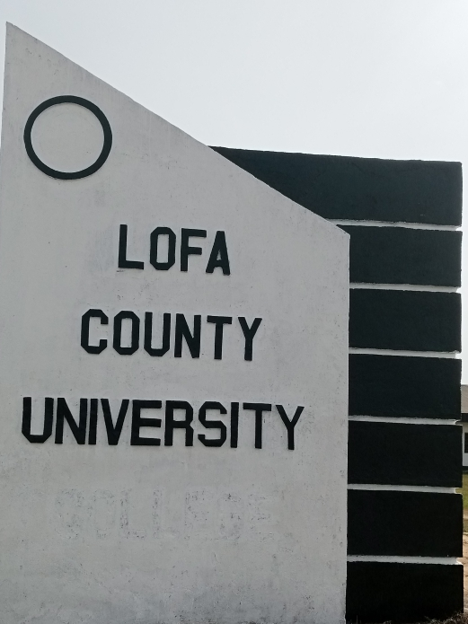

LOFA COUNTY UNIVERSITY'S Updated FACULTY & STAFF HANDBOOK
The Handbook was developed with the name Lofa County Community College but has been upadated to Lofa County University and from four departments to six colleges.

MESSAGE FROM THE PRESIDENT
With great pleasure and aspiration, I take this time to welcome you to the Lofa County University (LCU). The Lofa County University has a clear vision to be one of the premier integrated learning and applied research community University specializing in Agriculture, Health Sciences, Teacher’s Education, and Technology & Applied Sciences.
To achieve this vision, a collective effort is needed from both staff and faculty of the University.
The purpose of this Handbook is to guide faculty and staff during their job performances at the Lofa County University.
Therefore, in collaboration with the Senior Staff, we have designed this handbook which contains basic information, policies, regulations, and penalties for violations of policies, procedures and official code of conducts, among others. These policies are not intended to violate staff’s civil or human rights, instead, the aim is to enhance effectiveness and efficiency of staff performances at the University.
Good employees develop more passions for their job; henceforth, I urge each of you to be good employee of LCU.
Thanks.
Sincerely yours,
Dr. James N. Kollie, Sr.
President /CEO
Mission Statement:
The mission of the Lofa County University (LCU) is to serve communities by preparing students to become responsible citizens through the provision of relevant quality educational programs capable of responding to the human resource needs of the County and Country.
Values:
At the Lofa County University, we value:
- Empowerment of Learners.
- Rural Community Development.
- Teamwork; and,
- Continuous institutional growth and improvement in all departmental operations of the University.
Aims and Objectives to:
- Prepare a new corps of leaders to provide leadership to communities through quality education and skill training programs and services that are student focused.
- Create, establish and implement a co-educational institution of higher learning within Lofa County, the Republic of Liberia, to grant Diploma and Associate of Arts Degrees wherein graduates from accredited secondary schools may pursue their education in any field of learning provided by the Lofa County University;
- Provide instructional and learning conditions in all aspects of professional education that will effectively promote the interest, growth, and improvement of the Lofa County University.
- Promote and maintain the LCU as a center of learning where constituents of all races, classes and creed; gender and ethnic diversity can enjoy equal opportunity of learning through functional skill development; and ,
- Acquire, establish, and maintain such auxiliaries with associated Universitys, Universities and institutions at locations within and out of the Republic of Liberia as may be decided from time to time by the Board of Trustees.
Brief history of the Lofa County University
The Lofa County University (LCU) was established in 2010 by an Act of the National Legislature of the Republic of Liberia. This Act was published on April 14, 2011, and inaugurated on July 24, 2011. Dr. James N. Kollie, Sr. is the first President of the University.
The LCU officially opened to students on September 10, 2012, with 300 students.
After a successful semester of hard work, the University recruited two Vice Presidents (Vice President for Administration, Hon. Saa Philip-Joe and Vice President for Academic Affairs, Dr. Emmanuel Toyin Olufade). The institution is currently offering a two-three years degree programs in four Departments:
- College of Teachers' Education
- College of Agriculture
- College of Health Sciences
- College of Engineering and Applied Sciences
College of Business & Public Administration
College of Scocial Sciences & Humanity
1.0 Article I – LCU Administration
The chief administrator or Chief Executive Officer (CEO) of the Lofa County University is the President. She/he is supported by the Vice President for Administration, responsible for assisting the President in executing the administrative affairs of the University and the Vice President for Academic Affairs responsible for planning, supervision and coordination of all curricula and academic matters of the University.
1.1 Section 1 – LCU Senior Staff
The Lofa County University (LCU) comprises of a senior staff which buttresses administrative decisions of the University through the President. The Senior Staff is composed of the President, Vice Presidents and all heads of offices (Directors, Deans, etc.) of the University. Decisions of the senior staff with the approval of the President in attendance or in absentia constitute official decision of the University.
1.2 Section 2 – Vice President for Academic Affairs and Provost:
The Vice President for Academic Affairs and Provost shall be responsible for the planning, supervision and coordination of all curricular and academic matters of the University and shall serve as Vice Chair of the Faculty Senate and the Chair of the Academic Coordination Committee.
1.3 Section 3 – Vice President for Administration:
The Vice President for Administration shall be responsible for assisting the President in executing the administrative affairs of the University including Human Resource, Student Affairs, Maintenance,
Procurement, Transportation, Electricity Plant Operation, LCU Security, LCU Stores, LCU Warehouse, University Services, Public Relations, LCU Postal Services, Housing and all other administrative activities.
1.4 Section 4 – Financial Comptroller
The Finance Comptroller shall be responsible for accounting, financial management and all related fiscal matters of the University. He/she shall report to the President and Senior Staff of the University on all financial matters affecting the University. The Financial Comptroller along with the President, Vice President for Administration and Vice President for Academic Affairs with the recommendation of the Senior Staff shall plan and allocate funds in the University annual budget leading to purchases of supplies and equipment required for the operation of the University. Requests for use of materials shall originate from deans and directors of departments. The Finance Comptroller shall present monthly financial reports to the Senior Staff and the President.
1.5 Section 5 - Institutional Property
All properties belonging to the Lofa County University shall remain legal property of the University and shall be removed or used only upon authorization by the President and or the Vice Presidents. (See Article 1, Section 2&3).
1.6 Section 6 – Deposit of Funds
All funds or anything of value obtained for or on behalf of the University or any of its components, division or departments for any of its cooperate purposes shall be made payable and deposited in the official bank account of the University and all relevant documents be forwarded to the Finance Office.
1.7 Section 7-Obligation of the University
No individual or group of faculties, Staff, students etc. shall obligate the University without written authorization approved by the President.
1.8 Section 8-Solicitation of Funds
No Member of the University, staff, faculty, students, Organizations etc. Shall solicit funds on behalf of the University, use the name of the University or departments or sub-divisions in connection with fund-raising activities unless such individual, Organization, faculty/staff have first obtained the express approval of the President.
1.9 Section 9 -Bank Withdrawals:
There shall be three signatories (President, Vice President for Administration and Comptroller) for all bank withdrawals; however, in the absence of one of the signatories, any two of the three signatories mentioned can withdraw funds. No withdrawal or expenditure is allowed without budgetary support unless approved by the Senior Staff and the President. Each withdrawal shall be processed through a Voucher System.
1. 1 ARTICLE II – Dean of Admissions, Records & Registrations:
1.2 Section 1- Office of the Dean:
The Office of the Dean of Admissions shall be responsible for admissions of Students to the University, receiving, recording, and safe guiding student information, to conduct registration and other related activities.
Responsibilities for enrollment management shall be shared with all academic Units. The Dean of Admissions shall be responsible for preliminary clearance of students for graduation as maybe assigned by the Department.
1.3 Section 2- Issuance of Transcripts:
The Dean shall issue transcripts to all students and graduates only upon receipt of satisfactory endorsement that all outstanding obligations are met by the student or graduate.
2.0 DEANS AND HEAD OF DEPARTMENTS
Deans and heads of all Departments shall be required to submit administrative reports at the end of each semester. Academic Deans of Departments are to submit their reports to the Office of the Vice President for Academic Affairs while the Dean of Student Affairs and other administrative heads are to submit their reports to the VPA for onward transmission to the President.
2.0 ARTICLE III - General Term of Employment of faculty and staff:
2.1 Section 1-Responsibility of the University:
The primary responsibility of the Lofa County University is to ensure absolute commitment of employees to the Institution. Employment at the University is based on merit and standards set by the University departments and Administration. No employee of the University may accept appointment or assume responsibility/duty, the performance of which may conflict with the effective performance of his or her duties or prove embarrassing to the University. Acceptance of any other fulltime employment by a fulltime staff or faculty simultaneously is strictly prohibited.
2.2 Section 2a –Evaluation:
There shall be a performance evaluation of faculty and staff within the period of two-semesters.
2.3 Section 2b -Length of Appointment of Instructional Staff:
Appointment of instructional staff below the rank of Assistant Professor of the University shall ordinarily be made for one year after which he/she may be employed after evaluation.
2.4 Section-2c- Length of Appointment of Administrative Staff:
Appointment of administrative Staff at the level of President of the University is at the discretion of the President of the Republic of Liberia. Others, including Vice President for Administration, Comptroller, and Vice President for Academic Affairs, are based on the recommendation by the President of the University subject to confirmation by the Board. There shall be a probation period of three months for each position in this category.
2.5 Section 3-Advancement and Promotion:
Advancement and promotion of faculty and Staff shall be based on merit. For faculty Members Promotion is based on outstanding teaching performance and Community needs, and self-improvement through in-service training etc. For Administrative staff members promotion is equally based on outstanding job performance, significant contributions towards the growth and development of the University, and self-improvement through additional training and in-service training. There shall be Promotion Coordination Committee which guide with process leading to a specific evaluation promotion.
2.6 Section 4- Tenure
There shall be Tenure for staff members meeting specific Tenure requirements. Administration Staff are not entitled to tenure in the context described below. Administrative Staff shall be covered by Labor Laws of the Republic of Liberia.
2.7 Section 5- Eligibility for Tenure
Faculty Members are eligible for Tenures according to academic rank as follows:
- A faculty employed at the rank of professor is eligible for Tenure at the beginning of his/her third year at the University.
- Associate Professors are eligible for Tenure at the beginning of their fourth year at the University. Assistant Professors are eligible for tenure at the beginning of their fifth year at the University.
- Instructors shall be required to aspire to Tenure track within six (6) years as of their date of their first employment.
- A faculty hired as an Adjunct shall have the title of Lecturer depending on his /her qualification and experience. Except obtained prior to becoming an Adjunct at the University, no academic rank shall be attributed to part time lecturers at the University.
- Teaching Assistants or Demonstrators are not considered instructional staff for the purpose of this Handbook.
2.8 Section 6- Notice of Termination for Faculty:
At any, time during the period of appointment, an appointee may be notified of termination of his/her services.
A faculty with or without tenure may be terminated for misconduct and all other acts incompatible with her/his status as a faculty of the University. (See Article V- Code of Conduct).
2.9 Section 7- Leave of Absence:
Leave of absence with pay shall be approved by the President of the University or the Senior Staff on a case basis and information transmitted to the Vice President for Administration in advanced of such leave. Except where otherwise expressly indicated in the Rule and Regulation, leave of absence shall be granted with full pay
2.10 Section 8-Vacation Leave:
Annual vacation leave period shall be granted in accordance with the Labor Law of Liberia for all officers of senior administration and staff.
2.11 Section 9-Vacation Leave for Faculty:
Members of the faculty shall have their vacation leave between the date of the formal close of the school year and the beginning of the period of concentrated preparation for the next school year. Where specific duties prevent a faculty from taking her/his vacation leave at the regular time, the President may approve an adjusted period or his designate on the recommendation of the Dean of that University or Director of Schools.
2. 12 Section 10-Vacation Leave for all Other Staff:
Contacts for all full- time general office and clerical workers run from January 1 to December 31. The annual vacation shall be based on a full and complete year of service. Annual vacation Leave shall be granted in accordance with the general regulation of the Labor Laws of Liberia. Vacation leave for employees of the institutions shall be arranged at the convenience of the office, University or school in which they serve. Vacation leaves shall not be accumulated.
2. 13 Section 11- Study Leave:
Study leave shall be granted to members of the faculty and administrative staff provided they have completed a minimum of three (3) years of continuous service at the institution and depending good financial status of the University (availability of funds for such sponsorship). Study leaves shall be granted for the sole purpose of engaging in educational activities. The duration of study leave shall be determined by the host institution with approval by the Administration of the University. An employee having signed a contract with the University for study leave shall receive full monthly salaries until graduation.
Where an employee of the University is privileged to obtain directly from the University or with the University’s involvement, such person shall receive half monthly salaries as of the month of departure; while the University shall be responsible for full payment of the beneficiary’s tuitions and other fees require for the duration of the approved studies. In return the beneficiaries shall sign a contract to work for the University for a minimum of two (2) years for master’s degrees and four (4) years for PhD.
Note: No degree shall be earned perpetually, (e.g. Obtain master’s degree and Ph.D. concurrently). However, any extension of study leave shall be approved by the University upon justifiable reason(s) by the beneficiaries.
2.14 Section 12- Sick Leave:
Staff members shall be entitled to receive one-month sick leave in each academic year. In case of protracted illness, the annual leave of absence shall first be exhausted, before leave with half pay or without pay, is granted. Such extension shall not exceed 30 working days in accordance with the Labor Laws of Liberia.
2.15 Section 13 - Sick Leave Extension:
Additional sick leave shall be granted with half pay upon presentation of a medical certificate and acceptance by the President of the University or her/his designate. This provision is of one year duration and is subject to revision at the discretion of the University Administration specifically the President.
2.16 Section 14- Emergency Leave:
Emergency leave shall be granted for serious illnesses or death in one’s immediate family. Such leave shall not exceed fourteen (14) working days in any academic year.
2.17 Section 15-Maternity/Paternity Leave:
Maternity/Paternity leaves shall be granted with pay for a period of three months, while Paternity leaves shall be for one (1) month. Request for maternity /paternity leaves shall be filed with the Human Resource Department at least three months before the effective date of the leave. The University deserved the right to deny a paternity leave if sufficient proof to establish same is not available.
2.18 Section 16-Duty Leave:
Duty leave shall mean absence from the University on specific assignment to any organization or on participation at a conference in or out of the country. Such leave shall be granted by the Senior Staff, approved by the President or Senior Staff and shall not count against any leave to which the requesting individual is normally entitled. Duty leaves unrelated to the University may be granted by the President without pay for a period not exceeding three (3) months, especially where the special assignments are being compensated.
2.19 Section 17 –Leave without pay:
Upon approval of the President of the University, if applicable, leave of absence without pay may be granted for the following reasons:
- Study for professional improvement; not related to the University.
- Serious illness or death of some immediate member of her/his family when it is necessary that he/she be absent, more than the fourteen (14) working days allowed for emergency leave.
- Maternity leave exceeding the period stipulated in these Rules: where employee has been on job a minimum of one (1) year.
- Any other justifiable reason approved by the President of the University.
2. 20 Section 18-Staff Leave Procedures:
For any type of leave, the staff member must obtain relevant application form(s) from the Human Resource Office and submit same to her/his administrative head. The administrative head, if he/she approves the leave, forward the form(s) to the HRD for onward submission to the VPA for signature and approval. No one should go on leave until the approved copies of the forms submitted have been released from the Office of the President and received by the Department of Human Resource. No leave shall be accumulated. This procedure shall not exceed four hours for emergency.
2.21 Section 19-Suspension:
The President of the University shall suspend any member of the administrative staff or faculty for gross violation of the rules and regulation of the University. Final action by the Board of Trustees is possible in the case of suspension or dismissal of an employee whose appointment is subject to the approval of the Board.
2.22 Section 20- Lay-off and Termination:
The President of the University shall have authority to lay-off a faculty or staff member whose services are no longer needed, after reasonable notice in writing not less than one month in the case of a staff, and one semester for faculty. Such faculty or staff shall receive all entitlements consistent with the Labor Laws of Liberia. Termination of employment for cause must be fully investigated and penalty for the offence must be in accordance with provisions of this Staff Handbook and constitution of the University.
In the case of termination for reason(s), the affected staff shall be served a minimum of two warning letters prior to such action. However, depending on the act committed by the staff; a dismissal action may be taken without warning as stipulated in the Labor Laws of Liberia.
2.23 Section 21 -Resignations:
Notification of resignation by an administrative or faculty ought, in general, to be early enough to obviate embarrassment to the institution, the length of time necessary varying with the circumstances of the case. Subject to this general principle, a professor, or the head of an administrative office, should ordinarily give not less than four months’ notice. In all other cases, not less than three months’ notice shall be given. Resignations shall be filed with the HRD of the University.
2. 24 Section 22-Retirement:
All faculty and staff are entitled to receive from the University a retirement pension on retirement at the age 65 or 70 years, depending on the good health of the individual. Faculty or staff completing at least fifteen (15) years of continuous (unbroken) service before the retirement age are also qualified for retirement provided a request is made. Faculty and staff may also retire at any age after he/she has completed twenty-five (25) years of continuous service. The amount paid to a faculty or staff shall be sixty per cent (60%) of the average monthly earnings for the last five years immediately preceding retirement. One-twelfth of such amount shall be paid each month from the time of retirement until the death of faculty or staff.
2.25 Section 23- Faculty and Administrative Staff Transfer:
Upon transfer of a faculty member to a mainline administrative post, the transferred faculty shall not carry over her/his ranks’ salary to the administrative post which has a prescribed salary, except where the current salary of that faculty is greater than that of the administrative post to which he/she is being transferred.
Upon transfer of any administrative staff to the academic division of the University, such former administrator shall not carry over his/her salary and allowance but shall receive the prescribed salary and allowance for his or her new assignment, except where the current salary of that Administrator is greater than the new Academic Post. However, a special one –time service allowance shall be determined by the President, and paid to the staff concern, in recognition of service accordingly performed in the capacity indicated, provided that such staff has served for three (3) years and over.
2.1 ARTICLE IV: Faculty/ Staff Benefit:
2.1.1 Housing/Rent:
All senior staff shall be entitled to housing accommodation or allowance. Full-time faculty and staff members shall have the privilege of occupancy other than visiting faculty whose housing accommodation is covered by the University or relevant grant.
2.1.2 Lease Agreement/ Contract
Before occupancy, a lease agreement/ contract shall be exacted between the University and the concerned faculty or staff. Thereafter, the University Housing Policy shall be binding upon all occupants of the University Housing Units.
2.1 Section 1- Educational Assistance:
- Full-time employees of the University who meet the admission requirements of the University shall be allowed to take the maximum of two (2) courses per semester during working hour tuition free. Supervisors shall arrange employees’ schedules so that taking of such courses shall not conflict with performance of their duties. A minimum of 2.000 GPA, for undergraduate programs, shall be required and maintain for this benefit. For graduate/ professional programs, employees must maintain a 3.00 GPA. The course shall be scheduled before 9.00 a.m., during lunch hours, and/or after 5:00 p.m., on each workday.
- Employees who are desirous of taking additional courses beyond the two (2) courses provided for in one above, and still want to remain a fulltime employee of the University are to do so during non-working hours and will be required to pay full tuition and fees for the additional course(s).
- Students in Science related program, by virtue of the extensive laboratory works requiring several working hours to undertake activities relative to the respective discipline may be relegated to Student Assistant status with reduced responsibilities to enable them to undertake their studies effectively, while remaining employees of the University. This privilege is available to those who have served the University for at least three (3) years continuously.
- Faculty (Instructor and above) and senior staff (Director, Assistant Directors or its equivalent or above) with a master’s degrees will be entitled to full waiver privilege for two persons per semester. The names of these dependents shall, however, be filed with the Human Resource Department and shall form part of the staff’s personnel records. The President and the Vice Presidents will be entitled to full waiver privilege for five and three persons respectively.
- All full- time staff, including Teaching and Research Assistants, or Assistant Directors and below will be allowed for full waiver for one (1) dependent tuition free.
2.2 ARTICLE V: TEACHING
2.2.1 Section 1-Administrative Staff instructional Responsibilities:
Administrative staff with the relevant academic qualifications shall be required to teach a minimum of one and maximum of three (3) course sections per semester with pay, provided the course offerings are consistent with the staff’s training. Where it becomes necessary, an administrative staff may be allowed to teach additional courses after 5:00 p.m. or on Saturdays.
2.2.2 Section 2- Responsibilities of Deans and Directors of special Academic Programs:
The Dean of each Department and the Directors of special programs at the University shall be directly responsible for the instructional activities of the respective programs, including such related matters as attendance, and absences of instructors, staff members and students, in addition to their administrative work.
2.2.3 Section 3- Faculty Office Hours:
Each fulltime faculty shall set aside a minimum of three hours per week for office work.
2.2.4 Section 4- Faculty Workload:
Fulltime: The normal teaching load for a fulltime faculty with no administrative responsibilities shall be fifteen (15) credit hours per semester. Variations may be permitted in special cases upon recommendation of the Head of Department. A full-time faculty shall also be expected to engage in extra study and research in her/his subject area and in extracurricular activities through committee assignment. A fulltime faculty may teach additional course more than the 15 credits referred to above for extra compensation. However, such extra course load shall not exceed 3-6 credits depending on the need of the University and the capacity of the instructor. All extra loads shall be approved by the Dean.
Part-time: A part-time faculty member may not be assigned courses more than nine (9) credit hours per semester depending on the need of the University.
2.2.5 Section 5 – Conduct of class:
Faculty shall begin and end classes promptly to prevent students from reporting late for their next class or appointment. A one-hour class, for example shall begin as indicated on the schedule and end after fifty (50) minutes. Ten minutes shall be time enough for students to be seated for the next immediate class.
2.2.6 Section 6 – Submission of grades:
Grades shall be submitted to the Deans’ office for confirmation and immediately send to the Dean of Admissions’ Office within five working days or 120 hours as of the date the exams are administered. Any change or amendment to final grade reports by a faculty shall be made in writing with supporting documents and approved by Dean of the Department and the Vice President for Academic Affairs and Provost. Each faculty shall retain a copy of his/her grade reports and all amendments thereto. Absolutely no change of grades shall be undertaken without the use of an official LCU change grade form provided by the Office the Dean of Admissions. (See students’ handbook).
2.2.7 Section 7 – Class Attendance:
Heads of Academic Departments are responsible to ensure the participation of their faculty in the instructional program over which they preside. Within twenty-four hours, they shall report absence of any faculty from his/her post of duty to the Dean of the Department/University.
2.2.8 Section 8 – Faculty and Staff Meetings:
The Faculty and Administrative staff of the University shall meet monthly. The President or his/her designate shall determine an appropriate time for such meetings. The President or his duly designated representative shall preside at all meetings of the faculty and staff. It shall be the responsibility of all members of the faculty and staff to attend regularly and be punctual for all such meetings.
2.3 ARTICLE VII: Vacation School
2.3.1 Section 1 – Purposes:
The vacation school has the following purposes:
- To allow University students to make up for deficiencies and or failures incurred during the regular school year
.
- To accelerate student’s graduations by taking during vacation school certain required and elective courses.
- To explore the possibility of taking special courses not otherwise offered during the regular school year.
- To provide opportunity for selected regular instructors to utilize their vacation period usefully.
2. 3.2 Section 2: Instructional Staff Responsibilities:
Selected regular faculty members to teach vacation school are required to fully engage students as they do in regular school period. All vacation school instructors must be selected by their deans and must have demonstrated competence, dedication and good student instructor relations. Selected faculty and staff shall be compensated since they perform duties during vacation.
3.0 ARTICLE VII: CODE OF CONDUCT
The Administrative Code of Conduct established by Executive Order No.38 for members of the Executive Branch of Government shall serve as a premise for all LCU employees who are also public servants. The purpose of this CODE is to provide guidance for the conditions and sensitivities in LCU areas of operation, and to remind all LCU employees of their obligations, and to act with the highest standard of integrity and conduct both in the performance of their official duties and their private lives. All LCU employees must be sensitive to local customs, traditions, and cultures and demonstrate respect for the local population, in particular vulnerable groups. Consequently, any act of sexual abuse and/ or exploitation by members of the LCU family is strictly prohibited and constitutes a serious misconduct.
3.1 Section 1- Immunities:
Privileges and immunities accorded LCU staff pertain only to the discharge of their official duties. Functional immunity does not exempt LCU personnel from prosecution for criminal offenses, violation of country laws or any other acts of misconduct, which may be contrary to the spirit of the LCU Charter and/ or the mandate of the LCU.
3.2 Section 2- Behavioral Standards:
LCU Faculty and Staff must:
- Treat everyone with respect, courtesy and consideration. Be sensitive to the local culture, traditions and religions, observing strict gender-sensitive behavior.
- Conduct yourself in a professional and discipline manner. Exercise the highest standard of integrity. Dress (appropriately attired befitting the profession of all LCU employees and students). Appropriately, in this context means that private body parts shall not be exposed to the public. Faculty and office personnel shall ensure that their respective attires befit the office they are assigned. Wearing of casual T- shirts, shorts and shower slippers are prohibited. Think, talk and behave in a dignified manner befitting a mature, respectable and honorable member of the University.
- Implement the mandate of the University to the best of your ability and dedicate yourself to the overall goals of the institution.
- Be courteous to all members of the LCU and be mindful of the multicultural nature of LCU personnel, including the diversity of backgrounds, origins and / or rank.
- Act with impartiality: Do not engage in activities that are incompatible with your duties, including giving public statements that may adversely reflect on your status as faculty and member of the LCU and public pronouncements, which may compromise your impartiality.
- Exercise utmost discretion in handling confidential information and all matters of official business that could cause confusion and put lives at danger. Do not communicate to any government, entity, person or any other source any information known to you by reason of your official position that has not been made public, except as appropriate in the normal course of your duties or as authorized by the President of the University.
- Dual full-time employment of employees of the University with another institution shall be deemed inappropriate and therefore such shall be relegated to part-time status or subject to dismissal. A pensioned/ retired faculty may be engaged by the LCU on a part-time basis to teach one (1) course only.
3.3 Section 3-Sexual Exploitation and Abuse (Sexual Misconduct)
- The Board of Trustees of LCU demands complete adherence by all LCU personnel, zero tolerance policy toward sexual exploitation and abuse.
- Any form of prostitution, the exchange of money, employment, goods or services for sex, including sexual favors or other forms of degrading behaviors is strictly prohibited.
- Sexual activity with persons under the age of 18 is prohibited; mistaken belief in the age of the person is no defense.
- Any other act of sexual misconduct that has a detrimental effect on the image, credibility, impartiality or integrity of LCU.
- Any exchange of money, employment, goods or services for sex, including sexual favors or other forms of humiliating, degrading or exploitative behavior and or public solicitation of any such act shall be considered as an aggravating circumstance.
- All LCU staff must contribute to an environment that prevents sexual exploitation and abuse. Professors and instructors have a particular responsibility to ensure compliance with the code of conduct. LCU personnel are obligated to report any concerns regarding sexual exploitation and abuse by fellow workers through the established reporting mechanism.
3.4 Section 4- Alcohol and Drugs:
- The sale and consumption of alcoholic beverages shall be prohibited in the public eye on all LCU campuses. In the event of the LCU Administration, or a recognized group of the LCU organizing a social event, alcoholic beverages may be served on LCU campus. Driving, while intoxicated or influenced by drug use is forbidden and is subject to dismissal or suspension depending on the gravity.
- Drug consumption or trafficking is strictly prohibited. Such behavior constitutes a criminal offence under the Liberian Penal Code and may lead to prosecution in addition to internal disciplinary measures.
- No Faculty shall attend class under the influence of alcohol, however little.
- Smoking is strictly always prohibited on all LCU Campuses.
3.5 Section 5- LCU Assets:
- All assets of the Lofa County University shall be under the custody of the University Administration. 2There shall be periodic inventory of office property by the office of the Vice President for Administration to determine the appropriate use of equipment, etc.
- All LCU administrators shall exercise responsible stewardship and be accountable for all LCU assets under their charge including money, vehicles, property and equipment. Misuse of LCU properties including Computers by creating, downloading, storing and /or circulating pornographic or other offensive material is strictly prohibited.
- All drivers including LCU personnel always must take maximum precaution and exercise cautions, use defensive driving when operating LCU vehicles. Use of seat belts is mandatory. In case of any vehicle related incident, no matter how minor, operators must inform LCU Vice President for Administration immediately. Violators of existing regulations can put lives at risk, and therefore will be met with severe sanctions.
- LCU vehicles must be insured and must be parked either at LCU premises or in users’ residence. In case of emergency, notify LCU Security and the Vice President for Administration immediately.
3.6 8Section 6- Adherence to LCU Regulations and Rules:
- It is expected that all new LCU personnel, whether it is faculty or staff that they are to adhere to the following: the LCU Charter, these Rules and Regulations, and instructions by the President of the (LCU) and /or the Senior Staff. While all such directives shall be circulated to all personnel upon arrival and/or upon issuance, it is the faculty or staff member’s responsibility to remain informed of all such documents as applicable.
- Staff members are reminded that any breach of the University regulations, including the bribing of personnel may result in the lifting of immunities and constitute grounds for dismissal.
- Sexual exploitation: means any actual or attempted abuse of a person’s vulnerability, differential power, or trust, for sexual purposes, including profiting monetarily, socially or politically. Sexual abuse means the actual or threatened physical intrusion of a sexual nature, whether by force or under unequal coercive condition.
4.0 ARTICLE VIII: Force and Effect of these Rules:
All approved University rules shall be considered binding upon the University unless there is a particular conflict with the Bye Laws of the University in which case the later provision will prevail.
4.1 Section 1- Violation of Rules and Regulations
Any violation of these Rules & Regulations, the charter, By-Laws, including this code of conduct, inherent or external (national) is considered as a serious misconduct, and shall lead to disciplinary measures, including warning, suspension or summary dismissal.
4.2 Section 2 - Proposed Amendments to rules:
Any officially recognized group or body at the LCU shall have the right to propose amendment to the rules of the University, such proposal shall be submitted to the appropriate Dean or head of Department, who shall forward such proposal to the President or the Senior Staff with his/her recommendations or be submitted directly to the President of the University.
4.3 Section 3 – Amendments:
The rules contained herein shall remain in force until amended by:
- The Board of Trustees, with the concordance of eleven members or of a two-third majority of its members present, whichever is greater.
- The Senior Staff with the concurrence of majority of its memberships or by the approval of the President.
4.4 Section 4 – Publication of Amendments:
No amendments to the rules contained herein shall become effective until such written notice or publication is given, which are reasonably circulated to inform staff and faculty at large of its provisions.